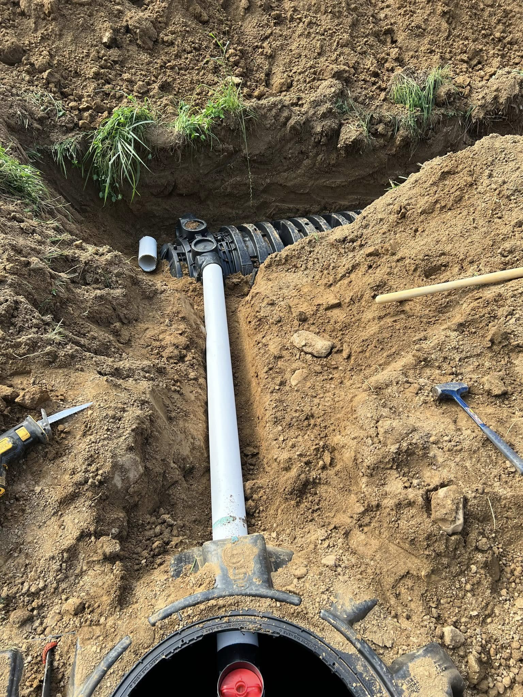
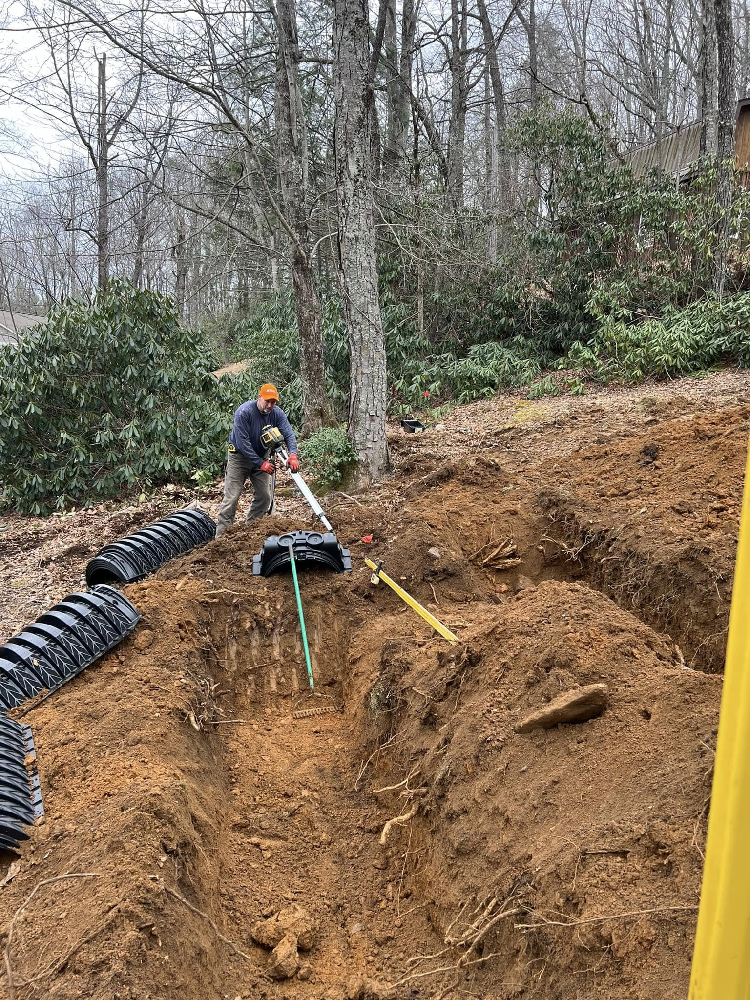
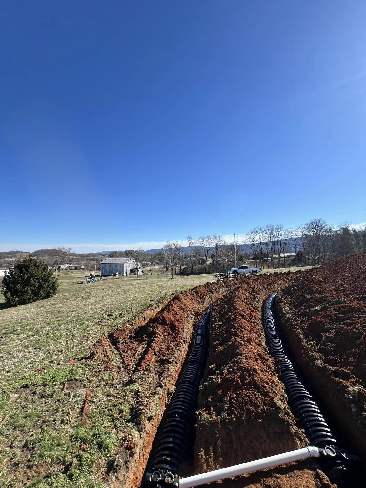
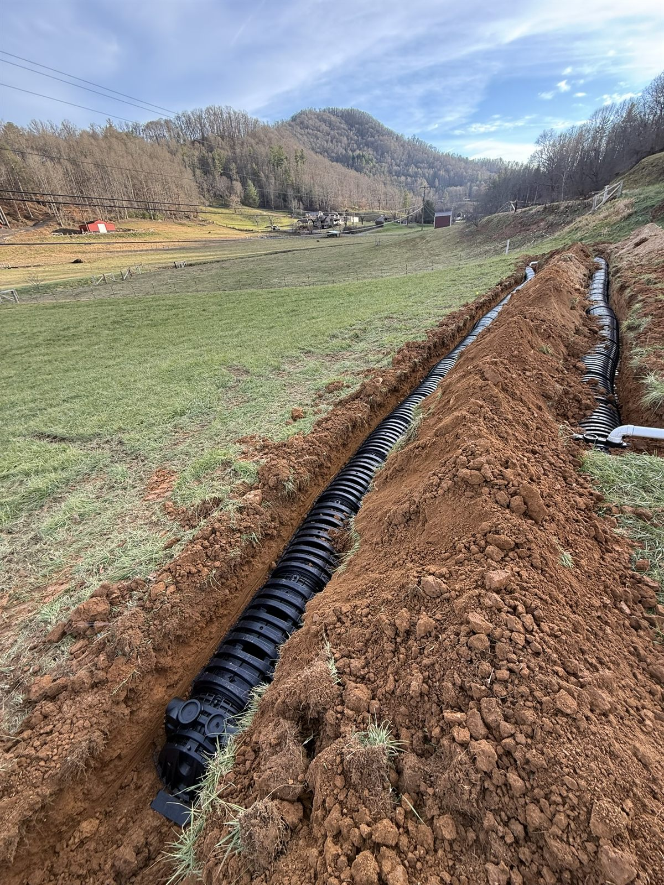

Culvert & Pipe (HDPE/RCP)
Driveway culverts and storm pipe sized for the flow, set on a proper bed, and run to daylight so water moves through instead of backing up.
In the mountains, water is what ruins a site, not the dirt. We plan for it from the start. Culvert and pipe, catch basins, swales, riprap, and underdrain across Yancey, Mitchell, Avery, and the surrounding WNC counties.

Steep ground sheds water fast, and on a WNC lot that water finds the driveway, the foundation, and the low corner of the yard before it finds anywhere else. Most of the failed sites we get called to fix did not fail in the dirt. They failed because nobody planned where the water would go. AGLM handles culvert and pipe installation (HDPE and RCP), catch basins, drop inlets, swales, riprap channels, underdrain, and footing drains.
Because we self-perform the whole site-work scope, drainage is not a separate trade we bolt on at the end. We tie it straight into the grading, so the pad, the driveway, and the pipe all shed water the same direction, with one accountable crew that knows where every line runs.
A full drainage scope handled by one crew, from where the water starts to where it leaves the site.
Driveway culverts and storm pipe sized for the flow, set on a proper bed, and run to daylight so water moves through instead of backing up.
Structures placed at the low spots to collect surface water and feed it into the pipe network instead of letting it pond and erode.
Graded swales and roadside ditches that carry runoff along the contour and away from pads, driveways, and structures.
Rock-lined channels and outlets that slow fast water on steep ground and armor the spots that keep washing out.
Perforated drain lines that pull groundwater away from foundations, footings, and crawlspaces before it gets inside.
Springs and seeps captured at the source and routed well clear of the house, so a wet yard or crawlspace finally dries out.

We work the slopes and seeps every day and know where mountain water collects and how fast it moves once it does.
Drainage and erosion control are the same job here. We slow the water and stabilize the ground so the site does not wash.
The same crew sets the grade and the pipe, so everything drains the direction it was designed to. No handoff, no finger-pointing.





Standing water, wet basements and crawlspaces, washed-out driveways, eroding ditches, and runoff coming off the slope above a house. We size and install culvert and pipe, catch basins and drop inlets, swales, riprap channels, underdrain, and footing drains, then tie it all into the grading so water leaves the site the way it should.
Yes. We set HDPE and RCP culvert and driveway pipe sized for the flow, set on a proper bed, and finished with rock headwalls so the inlet and outlet hold up instead of caving in. Done right, a culvert keeps the driveway from washing out every time it rains hard.
Yes, we have done exactly that. Springs and seeps are common on mountain ground, and they will keep a yard or crawlspace wet until the water is intercepted and carried off. We capture the source, run it through pipe or a rock channel, and route it well clear of the structure.
It depends on the source of the water, the slope, how far the run is, and what pipe, structures, or rock the fix calls for. There is no honest number without seeing the ground. We walk the site, find where the water is actually coming from, and give you a straight quote.
Tell us about the property and the scope. We'll get back fast.